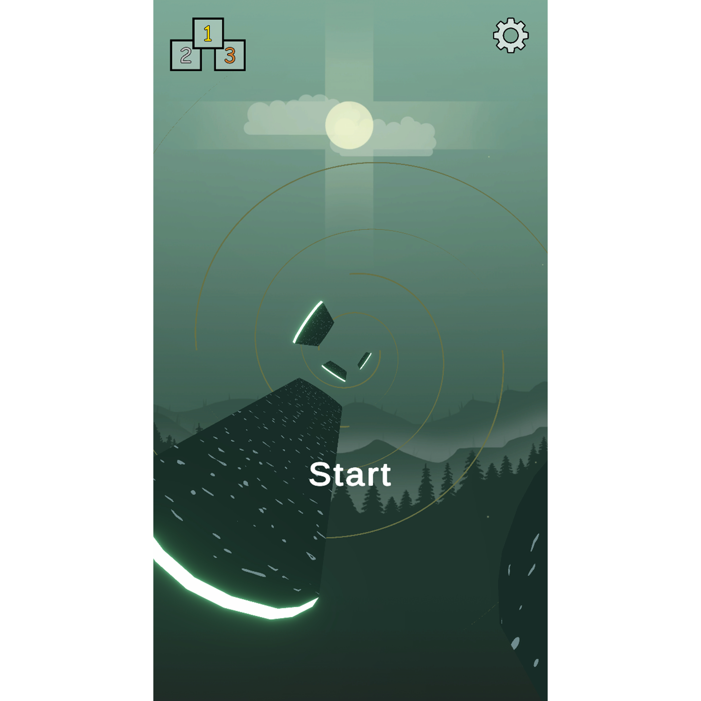
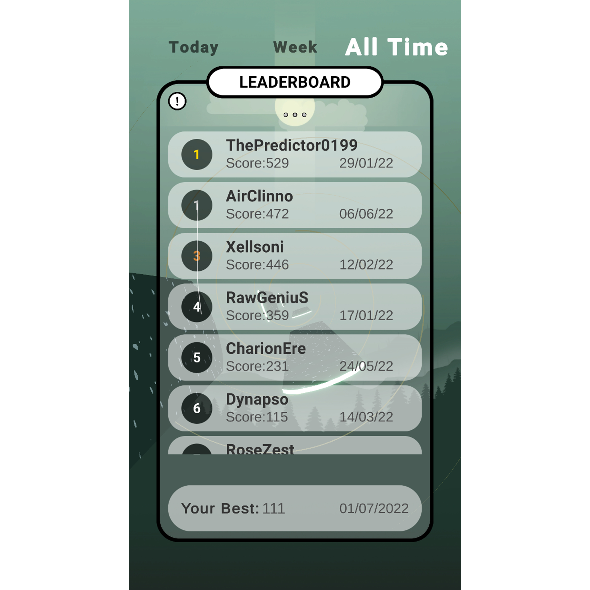
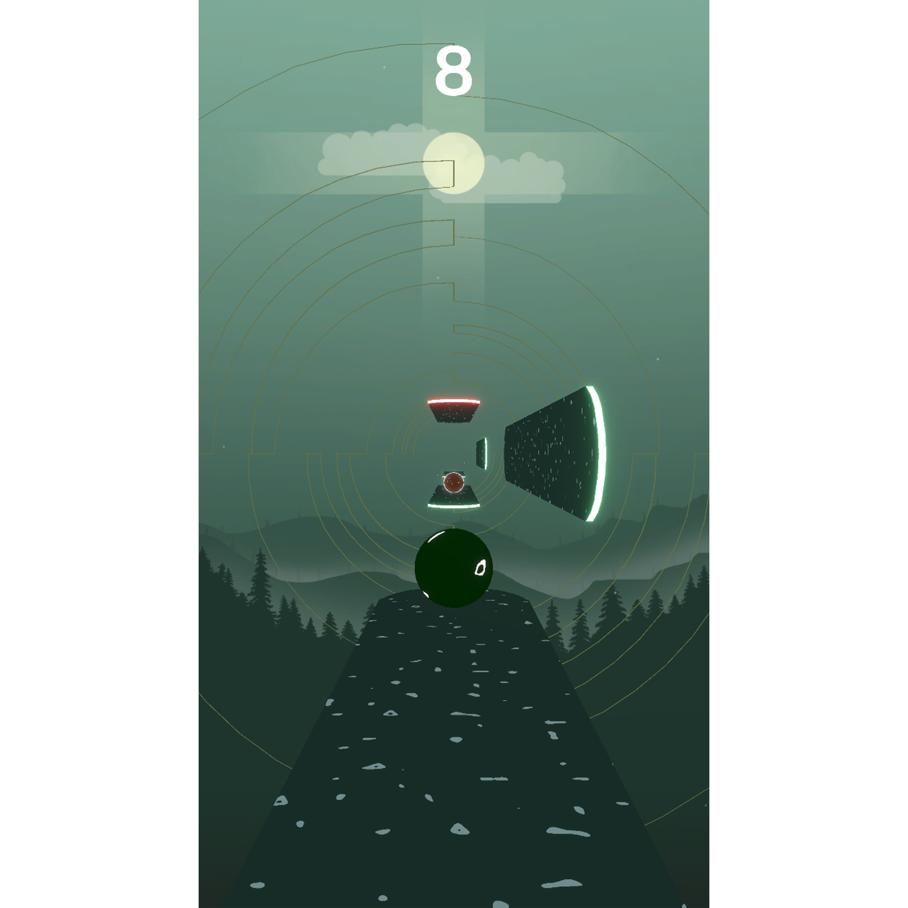
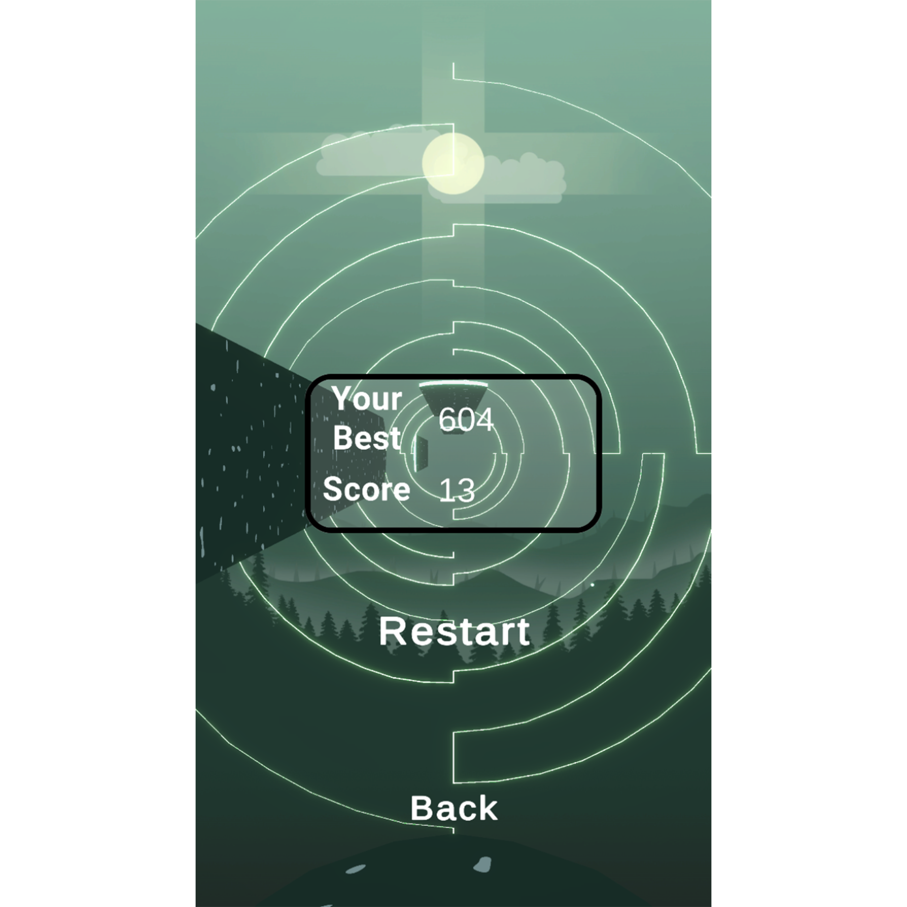
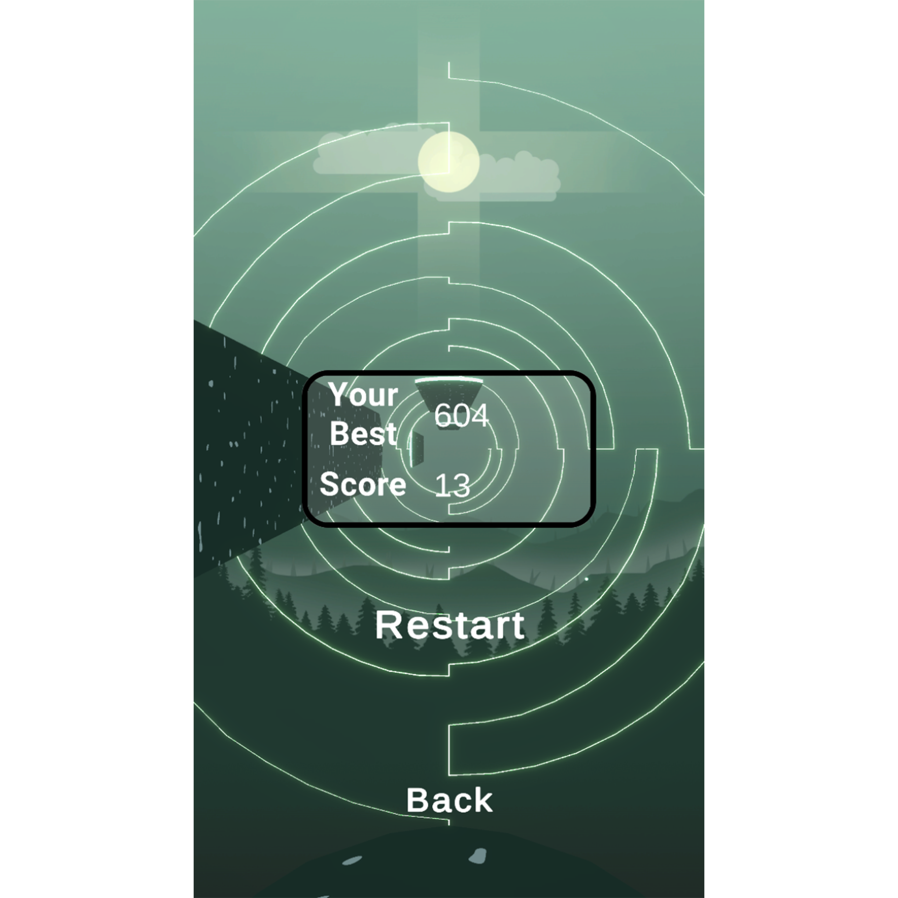

A video preview of the game
When you open the app a sample of the game is there as the background. Once you press "Start" the gameplay loads.
In the main menu there's a leaderboard, displaying the scores of the players. The scores are divided in Today, Week and All time sections. You can refresh the leaderboard by pressing on the three dots just under the window title.
There's also the settings menu where the sound sliders and the notifications toggle(currently disabled) welcome the player. Under that, there's the option for the players to disconnect or reconnect from their Google account, a button with a link to the game's privacy policy, a button to help where they can seek some guidance and an option for the player to conctact the developer.

In OverRoll your role is to decide to which side to jump. At some point, an orb will appear. Depending on the orb, the theme and the platforms will change. The speed of the player increases as you progress.
 

At the end you can see your final score and your all time best score.